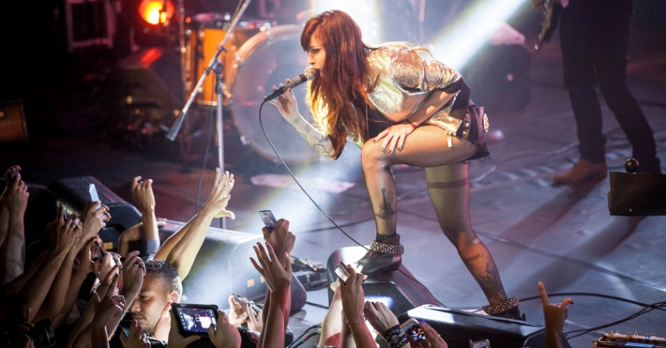

A rockeira brasileira

Priscilla Novaes Leone (mais conhecida como Pitty) nasceu em Salvador, em 7 de outubro de 1977, é cantora, compositora, produtora e instrumentista.
O mundo está de cabeça para baixo e ninguém me avisou.
- Pitty
Sua história
Pitty uma mulher que canta desde seus 17 anos de idade, pitty começou sua carreira em 1997 como baterista de uma banda pouco conhecida, com isso tentou outras oportunidades, então fechou contrato com a produtora Desckdisc em 2003 e no mesmo ano lançou seu primeiro single chamado “Máscara”, A canção ganhou alta rotação nas rádios, em 7 de maio de 2003 lança seu primeiro álbum de estúdio solo, Admirável Chip Novo, vendendo 800 mil cópias e conquistando disco de diamante no Brasil, tornando-se o disco de estilo rock, mais vendido de 2003 no país.
Sua família de origem humilde morava no centro de Salvador, em um apartamento de pequeno porte.Durante entrevista, anos depois, ela explicou: "A gente era uma família humilde, tudo de grana era apertado. Estudava em escola particular porque tinha bolsa. Fazia dança no Sesc, porque era barato. Mas quando era criança eu não me importava, Só queria brincar".
Pitty retorna aos palcos em São Luís com show de altíssimo nível. Nessa imagem podemos ver Pitty durante a turnê Setevidas, em São Paulo. Pitty credita a banda americana Faith No More, como uma das bandas que mais a influenciaram em construir seu interesse pela música, dizendo; “Esta é uma das bandas que mais me influenciaram, tanto pela nova sonoridade que eles criaram nos anos 90 quanto pela ousadia – além, é claro, do Mike Patton.” Ela define a banda Queens of The Stone Age como "melhor banda da sua geração"e o Muse, uma das "bandas que eu mais ama na vida". Para a cantora, graças o trabalho do Nirvana, "muitas coisas foram construídas e reconstruídas” e “foi em no vocalista Kurt Cobain, que ela encontrou um poeta que falava o que ela realmente pensava”.